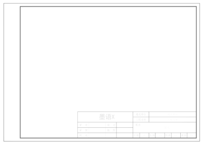
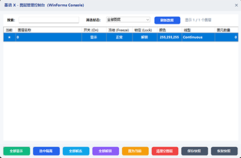
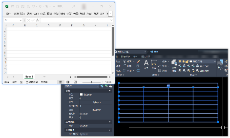
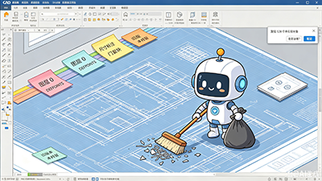
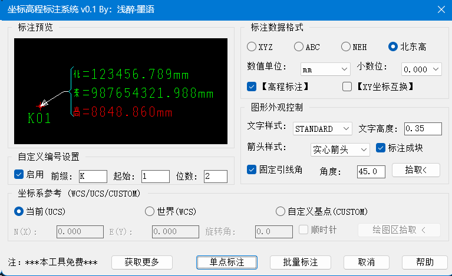
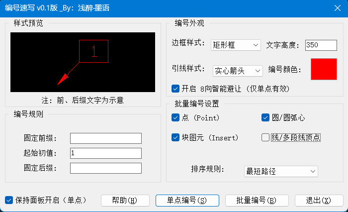
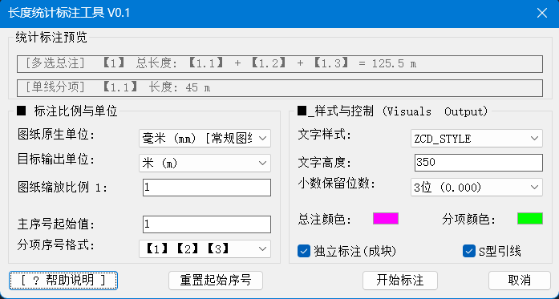
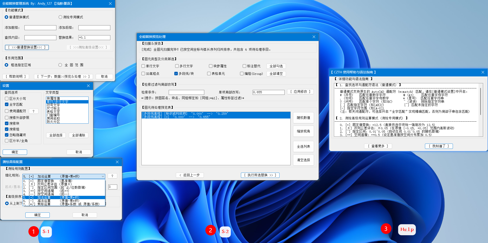
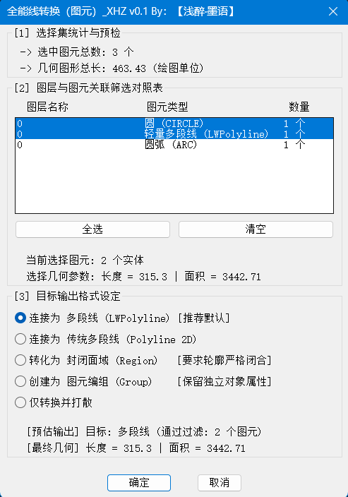
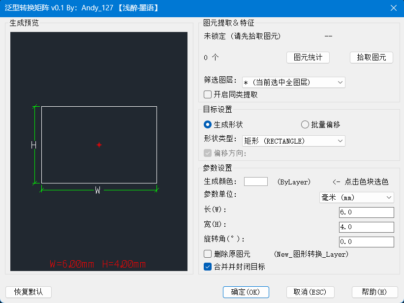

2. C# 核心原生模块使用说明
2.1 自动图框与排版管理 (CAD Auto BP_Frame)
BP_Frame
面向图纸出图环节的图框自动适配生成、出图比例推算、散乱图框规整对齐与标题栏数据集中提取工具。
INKBOX / INKALIGN / INKFRAMEDATA / INKCLONE
图框管理与排版命令集

图 2.1 - 自动图框生成向导与排版控制面板
详细操作步骤与功能说明：
- 启动图框向导 (INKBOX)：
- 在命令行输入
INKBOX，或在“墨语 X”Ribbon 菜单点击【智能图框】图标，打开图框主窗口；
- 版面与标准选择：支持 ISO 标准图框尺寸（A0、A1、A2、A3、A4 横版与竖版），以及自定义长宽的工程加长图框。
- 两种图框生成模式：
- 框选图元自适应模式：在绘图区框选图纸设计内容，算法自动计算外接矩形边界，并根据预设的标准出图比例（如 1:50、1:100、1:150、1:200 等）智能匹配最合适图框，完成定心插入；
- 定点插入模式：指定标准图幅与比例后，直接在图纸空间或模型空间鼠标点击确定插入基点。
- 散乱图框规整对齐 (INKALIGN)：
- 命令行输入
INKALIGN，批量框选多张图框；
- 系统弹出对齐对话框，支持设置行间距、列间距，并可选择按“从左到右、从上到下”或“从上到下、从左到右”进行矩阵对齐排列，方便成套整理图纸。
- 标题栏属性提取与修改 (INKFRAMEDATA)：
- 命令行输入
INKFRAMEDATA，呼出右侧停靠面板；
- 自动扫描识别全图图框中的图名、图号、版次、比例、日期等属性块字段，支持在面板中直接批量修改并回写图面。
- 视口与图框快速克隆 (INKCLONE)：
- 命令行输入
INKCLONE，可将现有图框的图层状态、视口图层覆盖及比例参数快速复制应用至其他布局。
2.2 批量打印与切图发布 (CAD Auto BatchPrint)
BatchPrint
专为工程成果交付设计的图框识别、DWG 自动切图分拆、PDF 批量虚拟打印与图纸目录交叉比对套件。
INKPLOT / INKPLOTDIALOG / INKPLOTDETECT / INKPDFMERGE
批量打印命令集 (兼容别名: SBP / SBPLOT / SBPDLG / SBPM)
批量处理流水线架构：
1. 图框识别
图块属性 / 闭合线框 / 空间网格启发式探测
2. 成果分拆
DWG 独立切图 + 天正 T3 格式向下兼容降转
3. 打印发布
后台批量虚拟打印 + PDF 自动拼装合并 (INKPDFMERGE)
4. 目录核对
TOC 目录表格与标题栏双向模糊核对
详细操作步骤与核心功能：
- 唤起工作台：
- 命令行输入
INKPLOT（或 SBP）呼出侧边栏快速打印面板，适用于当前图纸的快速打印与参数微调；
- 输入
INKPLOTDIALOG（或 SBPDLG）打开独立批量工作台，支持多文件批处理与切图配置。
- 三重图框识别机制：
- 图块模式 (BlockFrame)：识别指定的图签块，精准捕捉图号、图名、版本号与出图比例；
- 线框模式 (LayerFrame)：根据指定图层与闭合多段线的长宽比，识别非块图框；
- 空间网格探测 (SmartGrid)：采用几何空间网格拓扑算法，抗干扰能力强。执行
INKPLOTDETECT 可在绘图区高亮预览图框识别结果。
- DWG 独立切分与 T3 降转：
- 自动将模型或布局中的各图框裁切为独立的单张 DWG 文件，并按
{图号}_{图名}_{版本} 规则自动命名；
- 原生支持天正 T3 / 2004 格式降级转换，便于下游施工审查无障碍读取。
- PDF 批量虚拟打印与一键合并 (INKPDFMERGE)：
- 后台调用虚拟打印机完成连续图纸输出，支持图纸自动旋转对齐与页面居中；
- 输入
INKPDFMERGE（或 SBPM）可一键将输出的多份单页 PDF 拼接合并为完整的项目图册。
- 图纸目录 (TOC) 交叉比对与自动纠错：
- 一键读取图面目录表格或图纸说明文本，与图框标题栏属性进行双向模糊交叉比对，缺图或信息不符自动高亮预警。
2.3 智能中英输入法状态管理 (CAD Auto IME)
IME
智能感知绘图视口、命令行与文字编辑状态，在操作快捷键时保持纯英文，在编辑文字时自动激活中文输入法。
TOGGLEAUTOIME / CUSTOMAUTOIME
开关切换 (别名: OpenCadIme / InkIme / CadIme) / 配置面板 (别名: ImeConfig)
输入法智能感知状态机运转原理：
绘图视口 / 命令空闲
系统通过底层 API 强制保持英文状态，按 L/C/REC 等快捷键直接生效，绝不弹出拼音输入框。
在位文字 / 表格编辑
双击进入单行/多行文字、表格单元格、属性块或天正单行文字，系统毫秒级切换为中文状态。
完成编辑 / ESC 退出
文字录入完毕点击画布或按下 ESC，系统感知焦点转移并即刻复位为英文。
详细操作步骤与功能说明：
- 一键开关控制 (TOGGLEAUTOIME)：
- 在命令行输入
TOGGLEAUTOIME（或 InkIme / OpenCadIme），命令行将实时提示当前启用状态；
- 亦可直接点击 Ribbon 选项卡上的【自动输入法】按钮进行快速启闭。
- 在位文字编辑器智能感知：
- 针对多行文字在位编辑器 (
AcInPlaceEdit)、表格单元格编辑 (TABLEDIT)、天正单行文字 (DHWZ/TTEXT) 与属性块编辑，输入法状态机自动感知识别并激活中文；从编辑状态切回绘图区后，自动复位为英文。
- 个性化配置面板 (CUSTOMAUTOIME)：
- 输入
CUSTOMAUTOIME（或 ImeConfig）打开参数配置面板；
- 输入法适配：支持微软拼音、微信输入法、搜狗拼音、手心输入法等，提供 TSF 与 IMM32 双轨支持；
- 命令白名单：可自由添加或移除需要激活中文输入法的定制命令。
2.4 图层管理辅助工具 (CAD Auto LayerManager)
LayerManager
提供基于鼠标点选的图层快速隐藏、临时隔离与无损还原、图层锁定与置为当前功能。
INKLAYER / INKLAYERHIDE / INKLAYERISO / INKLAYERUNISO
快捷图层指令集 (支持 InkLayerShow, InkLayerLock, InkLayerCur, InkLayerAllOn)

图 2.2 - 图层管理控制台与点选交互说明
详细操作步骤与功能说明：
- 点选隐藏图层 (INKLAYERHIDE)：
- 在命令行输入
INKLAYERHIDE。在图面上鼠标左键点击任意图元，该图元所在的图层将立刻被隐藏；
- 支持连续多次点击隐藏，按
Esc 键或回车完成退出（当前激活图层有保护提示，避免误隐藏）。
- 图层临时隔离 (INKLAYERISO)：
- 输入
INKLAYERISO，框选需要保留的工作实体；
- 程序会自动暂存当前的图层状态快照，并将除选中图元所在图层及当前工作图层外的其他所有图层瞬间关闭。
- 隔离状态精确还原 (INKLAYERUNISO)：
- 输入
INKLAYERUNISO，程序读取暂存的快照数据，一键将图层显隐状态精确回滚到隔离前的初始状态。
- 其他便捷图层指令：
INKLAYERSHOW：一键开启全图所有被隐藏的图层；INKLAYERLOCK：点击图元将其所在图层锁定，防止误改动；INKLAYERCUR：点击任意实体直接将其图层置为当前工作图层；INKLAYERALLON：一键解除全图所有图层的隐藏、冻结与锁定状态。
2.5 表格与文本数据提取 (CAD Auto LiveTable)
LiveTable
用于提取 AutoCAD 图面上的原生 Table 实体与零散文字网格，并导出为标准 CSV/Excel 电子表格。
INKTABLE
呼出实时表格提取控制面板

图 2.3 - 表格提取控制面板与导出预览
详细操作步骤与功能说明：
- 启动命令 (INKTABLE)：命令行输入
INKTABLE，打开表格数据提取面板；
- 框选目标对象：点击【框选提取】，在 CAD 视口中框选原生 Table 表格实体，或由单行/多行文本构成的文字阵列；
- 网格拓扑解析与预览：程序解析单元格行、列结构、数值及文字内容，在对话框内以网格形式进行结构化预览；
- 导出为标准 CSV：点击【导出表格】，选择保存路径，生成标准
.csv 电子表格文件，方便在 Excel 中进行二次统计。
2.6 视口截图与图像导出 (CAD Auto SNAP)
SNAP
针对工程图纸汇报与技术交底的高清视口捕捉、矢量区域裁切与透明背景图片导出工具。
CSNAP / INKSNAP
唤起截图主界面
截图导出管线：
选区模式
矩形窗口拉框 (W) / 拾取封闭图元或图块边界 (B)
参数配置
透明通道 Alpha / 1x, 2x, 4x DPI 超采样放大
结果交付
直接写入系统剪贴板 (Ctrl+V 粘贴) / 本地文件保存
详细操作步骤与功能说明：
- 唤起截图 (CSNAP)：命令行输入
CSNAP 或 INKSNAP，打开截图面板；
- 选择选区方式：
- 窗口框选模式 (W)：在绘图区自由拖拽矩形框选定截取范围；
- 图元拾取模式 (B)：直接拾取封闭多段线、圆、椭圆或复杂图块，系统自动计算几何包围盒作为裁切边界。
- 图像参数调节：
- 背景透明 (Alpha)：勾选后剥离 CAD 背景底色，生成纯净透明底 PNG；
- DPI 超采样：支持 1x, 2x, 4x 超高清渲染输出，确保文字与细线条清晰度；
- 打印机自愈修复：若当前图纸未初始化打印设备，程序后台自动绑定内置虚拟 PDF 设备后重试。
- 导出与复制：点击【复制到剪贴板】可直接在聊天软件或 Word 中粘贴；点击【保存为图片】可导出为 PNG/JPEG 本地文件。
2.7 图纸数据库清理与维护 (CAD Auto SmartClean)
SmartClean
针对图纸文件体积膨胀、运行卡顿以及外部引用残留数据的分阶段系统级深度清理与修复工具。
INKPURGE
执行图纸分阶段深度清理流水线

图 2.4 - 图纸清理阶段配置与状态反馈
5 阶段深度清理流水线：
- 启动清理 (INKPURGE)：命令行输入
INKPURGE，程序自动进入清理管线；
- Phase 0 - 自动备份：清理前自动在图纸同目录下创建
*.dwg 安全副本，规避误操作风险；
- Phase 1 - 空间无效实体清理：自动检索并清除内容为空白的文字实体 (DBText/MText) 以及长度极小 (< 1e-6) 的无效短线；
- Phase 2 - DGN 残留字典与过滤器清理：清除外部导入图纸残留的
ACAD_DGNLINESTYLECOMP 复合线型字典和冗余图层过滤器，解决复制粘贴卡顿；
- Phase 3 - 递归多轮级联清理：最多执行 10 轮递归级联 Purge，清除非引用的块定义、空图层、孤立线型、文字与标注样式；
- Phase 4 - 比例列表重置与 Audit 修复：重置注释比例列表 (
_-scalelistedit)，并在后台静默触发 _audit 修复图纸底层数据库拓扑错误，最后输出统计报告。
2.8 LISP 插件管理与维护 (CAD Auto VlxSuite)
VlxSuite
面向 AutoLISP/VLX 脚本的集中管理、快速调度、热重载与沙盒安全调测控制台。
INKLISPMANAGER / INKRESTOREPLUGINS
呼出 LISP 控制台 (别名: LispManager) / 一键恢复默认插件
详细操作步骤与功能说明：
- 唤起控制台 (INKLISPMANAGER)：命令行输入
INKLISPMANAGER，或在功能区点击【插件控制台】按钮；
- 脚本扫描与浏览：系统自动扫描
Shared\VLX 目录下的所有 .vlx 与 .lsp 插件，左侧列表直观展示插件名称与当前状态；
- 一键运行与参数查看：点击列表中任意插件，右侧显示说明信息及包含的命令列表，点击【运行】即可直接在 CAD 当前视口触发该命令；
- 动态热重载 (Hot-Reload)：修改 VLX/LISP 脚本后，点击【强制重载】按钮，程序即刻重新加载脚本，无需重启 AutoCAD；
- 添加外部自定义插件：点击【添加外部插件】，选择本地的
.vlx 或 .lsp 文件，系统自动复制到共享目录并登记；
- 沙盒安全防护：内置
vl-catch-all-apply 异常拦截沙盒，第三方脚本发生错误时自动捕获异常并恢复全局环境变量（如 OSMODE、CMDECHO）。
2.9 关于、手册与界面恢复
System
系统版本信息查看、本地离线手册查阅以及 AutoCAD 工作空间重置后的界面快速恢复。
INKABOUT / INKHELP / INKMENU / INKRIBBON
系统维护命令集
详细说明：
INKABOUT：打开关于面板，查看当前墨语 X 版本号、AutoCAD 宿主版本与底层 .NET 运行时状态；INKHELP：在默认浏览器中直接打开本离线图文手册 (Readme.html)；INKMENU：当 AutoCAD 切换工作空间导致顶部“墨语 X”经典菜单栏丢失时，输入此命令可一键重新构建并恢复；INKRIBBON：重新刷新并恢复 Ribbon 功能区中的“墨语 X”选项卡。
3. VLX 扩展工具库使用说明
3.1 ZBBZ - 坐标高程综合标注系统
ZBBZ
轻量高效的坐标与高程标注工具。支持单点动态拖拽标注、批量图元避让标注以及一键提取坐标成果表。
ZBBZ / PLBZ / SCTB / ZBSZ
快捷别名: InkZBBZ / InkPLBZ / InkSCTB / InkZBSZ

图 3.1 - ZBBZ 坐标高程标注参数控制面板
详细操作步骤与功能说明：
- 单点动态标注 (ZBBZ / InkZBBZ)：
- 输入
ZBBZ，鼠标在视口中移动时坐标数值与引线实时跟随预览，点击确定标注位置；
- 标注过程中可按快捷键
S 进入设置面板，或按 Q 切换至批量模式。
- 批量自动标注与智能避让 (PLBZ / InkPLBZ)：
- 输入
PLBZ，框选多段线节点、点实体、圆心或图块插入点；
- 系统启动 8 向文字智能避让算法，防止文字重叠，批量生成标注。
- 生成坐标成果表 (SCTB / InkSCTB)：
- 输入
SCTB，框选已生成的标注对象，指定插入点即可生成 CAD 原生 Table 表格或导出为 CSV 数据文件。
- 全局坐标参数控制 (ZBSZ / InkZBSZ)：
- 输入
ZBSZ 呼出参数面板，支持切换 X, Y, Z / N, E, H 前缀，支持 WCS/UCS 坐标系切换与基点旋转设置。
3.2 BHSX - 智能编号速写系统
BHSX
支持单点动态连续编号、多图元智能排版编号，以及自动提取图内编号生成点位坐标成果表。
BHSX / BHTB
快捷别名: InkBHSX / InkBHTB

图 3.2 - BHSX 智能编号参数与排序规则控制面板
详细操作步骤与功能说明：
- 智能编号设置 (BHSX / InkBHSX)：
- 输入
BHSX 呼出控制面板，设置前缀、后缀、初值（支持数字或英文字母）与递增步长；
- 外观样式支持无边框、圆形、椭圆形、矩形等多种外框与引线形式。
- 5 种自动空间排序算法：
- 批量排版模式支持 5 种排序规则：①最短路径遍历、②从上到下/从左到右、③从左到右/从上到下、④拾取原始顺序、⑤沿选定多段线顺延。
- 提取成果表格 (BHTB / InkBHTB)：
- 输入
BHTB 框选图纸中的编号块，程序自动提取点号与 X, Y 坐标并插入原生表格。
3.3 ZCD - 长度统计标注工具
ZCD
专为工程制图研发的线元长度测量统计与分项标注工具，内置无缝单位换算与原生表格插入。
ZCD
快捷别名: InkZCD

图 3.3 - ZCD 长度统计参数与单位换算控制面板
详细操作步骤与功能说明：
- 启动与单位设置 (ZCD / InkZCD)：
- 输入
ZCD 打开面板，设置图纸原生单位 (mm/m) 与目标输出单位 (mm/cm/m/km)，程序自动计算折算比例。
- 17 种几何图元混合框选：
- 框选直线、多段线、三维多段线、样条曲线、圆弧、椭圆或多线 (MLINE)，毫秒级完成几何长度聚合计算。
- 分项序号引线与表达合成：
- 在线条中心自动标注分项序号（如 ①②③），并在总引线位置生成合成表达式（如
① + ② = 128.5 m）。
- 插入统计表格：
- 命令行提示是否插入表格，输入
Y 并指定点，即可直接插入包含图层、线型、分项长度与总长汇总的 CAD 原生 Table 表格。
3.4 CZTH - 文本与数据替换系统
CZTH
文本替换与批量改写工具，集成标准通配符与测绘高级数值运算双引擎，支持块属性与 Z 坐标联动。
CZTH / CZTH-RESET
主向导 / 重置规则缓存 (快捷别名: InkCZTH / InkCZTHReset)

图 3.4 - CZTH 文本替换与测绘高级数值运算面板
详细操作步骤与功能说明：
- 启动与选区 (CZTH / InkCZTH)：输入
CZTH，可选择全图扫描或局部框选目标文字；
- 双引擎替换规则：
- 普通文本模式：支持通配符 (
*, ?, #, @) 与全字匹配；
- 测绘数值模式：输入
=12.5 强制赋值；±0.05 叠加对称公差；0.01~0.05 区间随机浮动；++0.5 线性顺延递增；+0.1 / *1.1 算术运算。
- 三维高程联动：修改属性块内文本时，可勾选同步联动修改母块的真实 Z 轴高程坐标；
- 对比预览与日志：扫场后在列表中展示修改前与修改后对比效果，点击条目在视口居中高亮，执行完毕可导出对比日志；
- 重置缓存 (CZTH-RESET)：输入
CZTH-RESET 可一键清空历史规则并恢复出厂默认。
3.5 XZH - 全能线清洗转换系统
XZH
高效图元清洗与格式统一插件，支持将 17 种不同类型线元自动路由清洗并转换为轻量多段线、面域或编组。
XZH
启动转换控制面板 (快捷别名: InkXZH)

图 3.5 - XZH 图元清洗分类与格式转换面板
详细操作步骤与功能说明：
- 选择图元 (XZH / InkXZH)：框选目标图元后输入
XZH，支持直线、圆弧、样条曲线、螺旋线、多线 (MLINE) 等；
- 几何分类统计：面板自动按图层与图元类型统计数量，并计算所选对象的总长度与总面积；
- 选择转换格式：
- LWPolyline (轻量多段线) [推荐]：将线元清洗并无缝拼接为连续多段线；
- Region (闭合面域)：自动校验闭合状态并转换为面域；
- Group (图元编组)：将散乱线元打散清洗后统一编组。
- 执行转换：点击【确定】，系统自动完成几何路由拼接与杂线清理。
3.6 XZX - 泛型图元转换矩阵
XZX
图元批量重构与参数化生成工具。支持根据几何中心重构标准形状、自适应包围盒与闭合诊断偏移。
XZX
执行转换矩阵主命令 (快捷别名: InkXZX)

图 3.6 - XZX 泛型转换参数与闭合诊断面板
详细操作步骤与功能说明：
- 拾取与同类提取 (XZX / InkXZX)：输入
XZX，可常规框选，亦可开启“同类提取”（点击单图元即自动选中同图层所有同类对象）；
- 模式选择与参数配置：
- 重构形状模式：下拉选择目标几何体（圆、矩形、外接包围盒、正多边形、十字星、心形），输入长宽或半径；
- 批量偏移模式：指定偏移距离，设置向外或向内方向。
- 闭合诊断与安全策略：
- 面板可诊断图元闭合状态，若包含发散线条，可选择：①全部转换、②仅转闭合图形、③仅转未闭合图形；
- 合并输出：勾选【合并并封闭目标】，阵列结果将自动合并为闭合多段线并放置于专用图层。
5. 常见问题解答 (FAQ)
Q1: 在旧版本 AutoCAD (如 2008 / 2012) 中，启动后命令行提示“未知命令”怎么办？
A: 墨语 X 在安装时会自动将插件注册到 AutoCAD 的注册表中。如果由于系统安全策略或绿色版 CAD 导致未自动加载，请在 CAD 命令行输入 NETLOAD 命令，浏览并选择对应版本目录中的 Plugins\InkVerseX.dll（例如 AutoCAD 2008 选择 {安装目录}\R17\Plugins\InkVerseX.dll，AutoCAD 2022 选择 {安装目录}\R24\Plugins\InkVerseX.dll）手动加载一次即可。
Q2: 为什么提示“找不到 pdfium.dll”或 PDF 截图失败？
A: 墨语 X 采用了共享资产库架构，pdfium.dll 位于安装目录下的 Shared\x86 或 Shared\x64 文件夹中。请确认未手动删除插件安装目录下的 Shared 文件夹。若移动过，请恢复原位或重新运行安装向导。
Q3: 频繁弹出“安全警告：未签名的高级可信路径”如何解决？
A: 安装程序在安装时会自动将安装目录添加到 CAD 的受信任路径中。若仍弹出警告，可手动打开 AutoCAD“选项 (OP) -> 文件 -> 受信任的位置”，添加安装目录根路径（如 %APPDATA%\InkVerseX\...）并点击应用。
Q4: 经典工具栏没有显示图标，或者图标变成了一个问号？
A: 工具栏图标文件位于 {安装目录}\Shared\Resources 中。请打开 AutoCAD“选项 (OP) -> 文件 -> 支持文件搜索路径”，检查并确认是否已包含该 Resources 路径。随后在命令行输入 INKMENU 即可重新恢复。
Q5: VLX 插件无法加载或提示 plugins.json 错误？
A: 可在命令行输入 INKLISPMANAGER 打开控制台，点击【强制重载】。程序会自动重新扫描 Shared\VLX 目录下的所有插件文件并重构配置文件。
Q6: 在 3D 视角或 UCS 自定义坐标系下，标注或编号位置错乱怎么办？
A: 使用 ZBBZ 或 BHSX 时，如果位于三维视图中，可以在命令控制面板中将坐标系选项切回 WCS (世界坐标系)，或输入 PLAN 命令将视图重置为二维平面。
Q7: 卸载墨语 X 时，图纸中已生成的标注和图框会丢失或损坏吗？
A: 不会。墨语 X 生成的所有图框、表格与坐标标注均基于 AutoCAD 原生图块 (Block)、多段线 (Polyline) 与表格 (Table) 对象构建，不创建第三方自定义代理实体，即使卸载插件，图纸在任意纯净 AutoCAD 环境中依然保持完整。
Q8: 如何彻底卸载墨语 X 并清除配置？
A: 在 Windows 控制面板中找到“墨语 X”，执行标准卸载程序。卸载程序会自动从 AutoCAD 注册表中清理加载项与受信任路径配置。
Q9: 智能输入法切换 (CAD Auto IME) 在部分第三方输入法下无响应怎么办？
A: 墨语 X 支持微软拼音、微信输入法、搜狗输入法、手心输入法等。请在命令行输入 CUSTOMAUTOIME 打开配置面板，确认当前输入法驱动选择正确，并确保输入法软件自身的“快捷键中英文切换”设置为默认的 Shift 键。